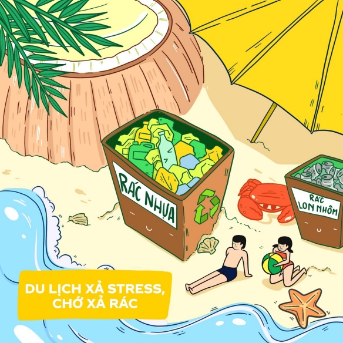

CHƯƠNG TRÌNH HOẠT ĐỘNG

ĐỘC ĐÁO NHỮNG SÁNG KIẾN CHỐNG RÁC THẢI NHỰA
Tái chế rác không chỉ mang lại lợi ích về kinh tế mà còn giúp cho môi trường sống xanh hơn, từ đó cuộc sống của mỗi người sẽ mạnh khỏe, hạnh phúc hơn. Bằng những sáng kiến và việc làm cụ thể, các chị em nội trợ, du khách, thanh niên, các sinh viên học sinh và cả những em nhỏ tuổi... cũng có thể tham gia vào các mô hình hạn chế sử dụng túi nilon, đồ nhựa dùng một lần nhằm chống rác thải nhựa cũng như có thể kiếm sống hoặc khởi nghiệp từ những việc làm này. Những ai đã từng đến trung tâm Lagreens (Hà Nội) hẳn sẽ không khỏi ngạc nhiên khi tận mắt nhìn thấy hoặc trực tiếp sờ vào những vật phẩm như hộp mứt, đồ lưu niệm, lọ hoa, đồ trang trí, ống đựng bút... nhiều màu sắc được làm từ… rác thải. Thực hành bộ giáo trình “Nghệ thuật Tái chế”, các bạn thiếu niên sẽ được thoải mái sáng tạo, biến các vật dụng bỏ đi thành những sản phẩm nghệ thuật có tính ứng dụng cao. Thông điệp mà Lagreens muốn gửi gắm đến người trẻ là đồ vật cũ luôn có thể tái sử dụng mà không phải vứt đi. Chỉ cần một chút sáng tạo, chúng ta đã có thể góp một phần công sức nhỏ bé của mình giúp Trái Đất ngày càng xanh.
Tái chế rác không chỉ mang lại lợi ích về kinh tế mà còn giúp cho môi trường sống xanh hơn, từ đó cuộc sống của mỗi người sẽ mạnh khỏe, hạnh phúc hơn. Bằng những sáng kiến và việc làm cụ thể, các chị em nội trợ, du khách, thanh niên, các sinh viên học sinh và cả những em nhỏ tuổi... cũng có thể tham gia vào các mô hình hạn chế sử dụng túi nilon, đồ nhựa dùng một lần nhằm chống rác thải nhựa cũng như có thể kiếm sống hoặc khởi nghiệp từ những việc làm này. Những ai đã từng đến trung tâm Lagreens (Hà Nội) hẳn sẽ không khỏi ngạc nhiên khi tận mắt nhìn thấy hoặc trực tiếp sờ vào những vật phẩm như hộp mứt, đồ lưu niệm, lọ hoa, đồ trang trí, ống đựng bút... nhiều màu sắc được làm từ… rác thải. Thực hành bộ giáo trình “Nghệ thuật Tái chế”, các bạn thiếu niên sẽ được thoải mái sáng tạo, biến các vật dụng bỏ đi thành những sản phẩm nghệ thuật có tính ứng dụng cao. Thông điệp mà Lagreens muốn gửi gắm đến người trẻ là đồ vật cũ luôn có thể tái sử dụng mà không phải vứt đi. Chỉ cần một chút sáng tạo, chúng ta đã có thể góp một phần công sức nhỏ bé của mình giúp Trái Đất ngày càng xanh.

THAY ĐỔI MÔI TRƯỜNG SỐNG BẰNG NHỮNG THÓI QUEN ĐƠN GIẢN
“Sống xanh” không vĩ mô như cách bạn thường nghĩ, mỗi hành động nhỏ cũng đang góp phần thay đổi cuộc sống tích cực hơn. Sau thời gian giãn cách dài hơi, người trẻ lại rục rịch đủ kế hoạch xả hơi và hẹn hò. Đó có thể là bất cứ đâu, dù là vùng vẫy ở bãi biển xanh ngát, co ro hạnh phúc ở Đà Lạt se lạnh hay lang thang giữa trời Huế nên thơ… Với thông tin Chính phủ đang kích cầu du lịch trở lại, các tín đồ xê dịch sẽ cảm thấy hào hứng hơn bao giờ hết. Mới đây nhất, Sở du lịch cũng vừa kiến nghị kéo dài kỳ nghỉ 2/9 lên 5 ngày, nhằm kích cầu du lịch, tạo cơ hội để người dân du lịch trong nước. Dù mới là kiến nghị nhưng nghe thật là muốn lên cả trăm kế hoạch chứ không ít. Nhưng vui chơi cũng đừng quên “người bạn thiên nhiên”, đã cất công xách ba lô lên và đi thì hãy mang theo những thói quen tích cực này bên mình để góp phần bảo vệ môi trường nhé! Vui chơi không quên… phân loại rác thải mọi lúc mọi nơi Bắt đầu từ những hành động nhỏ như bỏ rác vào đúng nơi và phân loại vào đúng thùng. Tuy đơn giản nhưng góp phần tích cực đến môi trường, giúp giảm tải rác thải, tiết kiệm chi phí thu gom và dễ dàng phục vụ cho mục đích tái chế.
“Sống xanh” không vĩ mô như cách bạn thường nghĩ, mỗi hành động nhỏ cũng đang góp phần thay đổi cuộc sống tích cực hơn. Sau thời gian giãn cách dài hơi, người trẻ lại rục rịch đủ kế hoạch xả hơi và hẹn hò. Đó có thể là bất cứ đâu, dù là vùng vẫy ở bãi biển xanh ngát, co ro hạnh phúc ở Đà Lạt se lạnh hay lang thang giữa trời Huế nên thơ… Với thông tin Chính phủ đang kích cầu du lịch trở lại, các tín đồ xê dịch sẽ cảm thấy hào hứng hơn bao giờ hết. Mới đây nhất, Sở du lịch cũng vừa kiến nghị kéo dài kỳ nghỉ 2/9 lên 5 ngày, nhằm kích cầu du lịch, tạo cơ hội để người dân du lịch trong nước. Dù mới là kiến nghị nhưng nghe thật là muốn lên cả trăm kế hoạch chứ không ít. Nhưng vui chơi cũng đừng quên “người bạn thiên nhiên”, đã cất công xách ba lô lên và đi thì hãy mang theo những thói quen tích cực này bên mình để góp phần bảo vệ môi trường nhé! Vui chơi không quên… phân loại rác thải mọi lúc mọi nơi Bắt đầu từ những hành động nhỏ như bỏ rác vào đúng nơi và phân loại vào đúng thùng. Tuy đơn giản nhưng góp phần tích cực đến môi trường, giúp giảm tải rác thải, tiết kiệm chi phí thu gom và dễ dàng phục vụ cho mục đích tái chế.

CHUYỆN VỀ NHỮNG CÁNH ÉN VÀNG RẢI LỘC XUÂN, MANG TẾT TRỌN VẸN TỚI MỌI NHÀ
Đã từ rất lâu rồi, Én vàng không chỉ đơn thuần là biểu tượng của ngày Tết, tô điểm thêm sắc màu cho không gian sống mà còn sải cánh khắp 3 miền để trao gửi lộc xuân và niềm vui tới những hoàn cảnh khó khăn. Năm 2007, Én lần đầu hiện thực hóa giấc mơ “trao xuân gửi lộc”. Những niềm vui và giọt nước mắt hạnh phúc của bà con khi nhận quà ngày ấy đã giúp Én nhận ra rằng, con đường đang đi thật sự ý nghĩa và xứng đáng. Đó cũng chính là động lực cho một chuỗi hành trình được duy trì mãi từ đó cho tới tận bây giờ. Én vẫn nhớ rõ năm đầu tiên có những chuyến xe tải đỏ đi xuyên suốt 3 miền Bắc - Trung - Nam, trải dài khắp 7 tỉnh thành mùa Tết 2014. Mỗi phần quà chẳng hào nhoáng mà chỉ là những món đồ thiết thực như gạo, dầu ăn, bánh kẹo, nước giải khát và phiếu mua hàng siêu thị. Ấy vậy mà Én được nhận lại những thứ quý giá hơn cả: đó là tiếng cười giòn tan đong đầy hạnh phúc, là lời cảm ơn từ tận đáy lòng khi “Tết vơi đi một nỗi lo
Đã từ rất lâu rồi, Én vàng không chỉ đơn thuần là biểu tượng của ngày Tết, tô điểm thêm sắc màu cho không gian sống mà còn sải cánh khắp 3 miền để trao gửi lộc xuân và niềm vui tới những hoàn cảnh khó khăn. Năm 2007, Én lần đầu hiện thực hóa giấc mơ “trao xuân gửi lộc”. Những niềm vui và giọt nước mắt hạnh phúc của bà con khi nhận quà ngày ấy đã giúp Én nhận ra rằng, con đường đang đi thật sự ý nghĩa và xứng đáng. Đó cũng chính là động lực cho một chuỗi hành trình được duy trì mãi từ đó cho tới tận bây giờ. Én vẫn nhớ rõ năm đầu tiên có những chuyến xe tải đỏ đi xuyên suốt 3 miền Bắc - Trung - Nam, trải dài khắp 7 tỉnh thành mùa Tết 2014. Mỗi phần quà chẳng hào nhoáng mà chỉ là những món đồ thiết thực như gạo, dầu ăn, bánh kẹo, nước giải khát và phiếu mua hàng siêu thị. Ấy vậy mà Én được nhận lại những thứ quý giá hơn cả: đó là tiếng cười giòn tan đong đầy hạnh phúc, là lời cảm ơn từ tận đáy lòng khi “Tết vơi đi một nỗi lo